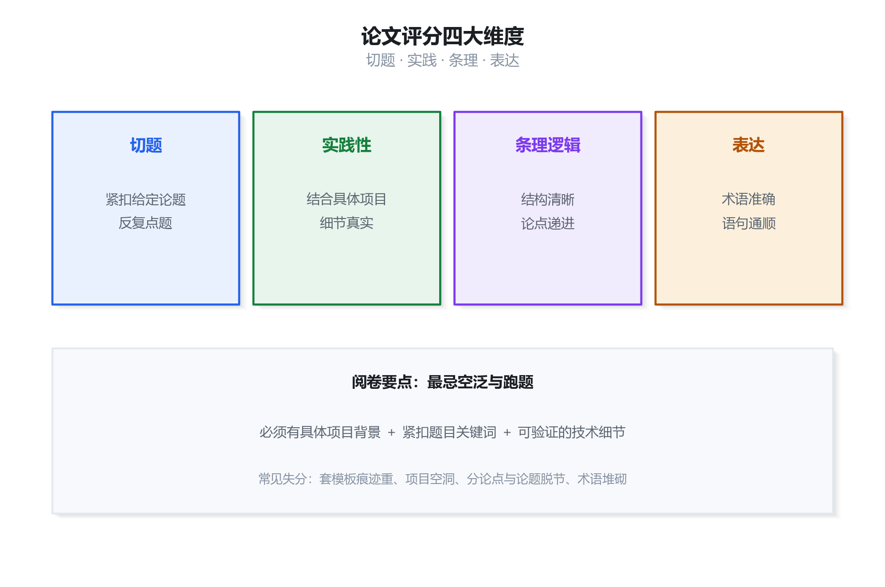
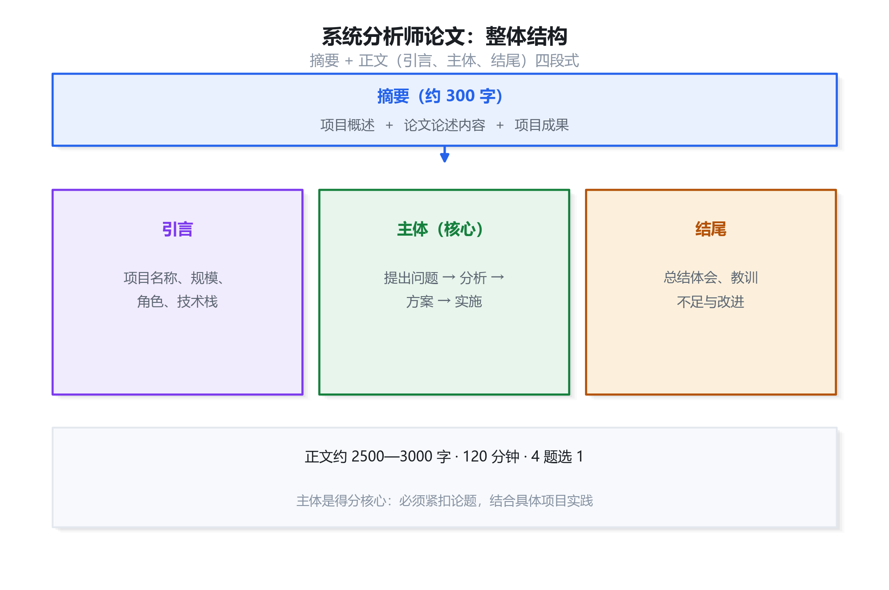
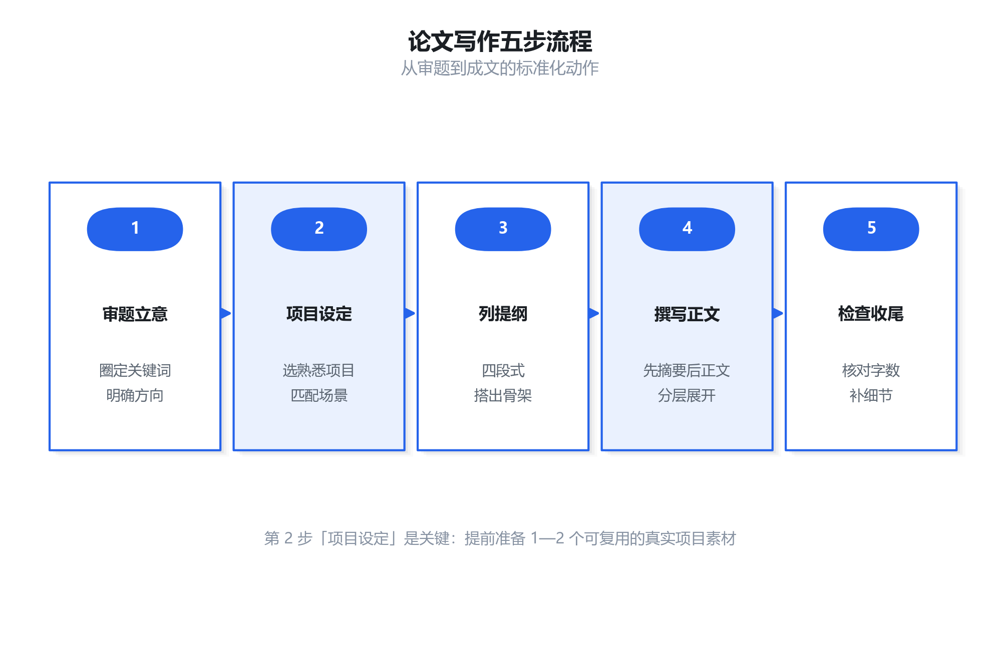

论文写作专项：方法精讲 + 高频范文
论文是系统分析师下午二科目，考试时长 120 分钟，从 4 道题中选 1 道撰写一篇约 2500—3000 字的实践性论文。本资料拆解评分标准与四段式结构，讲透摘要、引言、正文主体、结尾的写法，并给出 6 篇高频主题范文（含完整摘要 + 正文骨架 + 关键论述句），可套用、可背诵、可直接改写。
论文科目概述与评分标准
必读1.1 科目基本信息
| 项目 | 说明 |
|---|---|
| 科目名称 | 论文（下午二） |
| 考试时长 | 120 分钟 |
| 题型 | 4 道题中任选 1 道，撰写一篇实践性论文 |
| 字数要求 | 正文约 2500—3000 字（摘要另计，约 300 字） |
| 分值 | 满分 75 分，45 分及格 |
| 考察核心 | 系统分析、设计、项目管理的实践能力与经验总结 |
1.2 评分四大维度
论文阅卷主要从四个维度综合评判，每个维度都直接决定分数高低：
| 维度 | 含义 | 得分关键 |
|---|---|---|
| 切题 | 是否正确理解题意，全文紧扣给定论题 | 反复点题、分论点直接回应论题关键词 |
| 实践性 | 是否结合具体项目，背景真实、细节具体 | 有项目名称、规模、角色、技术栈、真实数据 |
| 条理与逻辑 | 结构清晰、论点明确、论述有层次 | 四段式结构、分论点递进、前后呼应 |
| 表达 | 文字通顺、专业术语准确、卷面整洁 | 术语规范、语句通顺、无明显病句错字 |

论文整体结构与流程
框架2.1 四段式结构
一篇合格的软考论文，标准结构为「摘要 + 正文（引言、主体、结尾）」，其中正文主体是得分核心：
- 摘要（约 300 字）：项目概述 + 论文论述内容 + 成果效益，是全文的「浓缩名片」。
- 引言（项目背景）：交代项目的名称、时间、规模、你的角色、技术栈，为后文实践奠定基础。
- 主体（约 2000 字）：紧扣论题，按「提出问题 → 分析 → 方案 → 实施 → 效果」展开，设 3 个左右分论点层层递进。
- 结尾：总结体会、经验教训、不足与改进方向。

2.2 写作五步流程

2.3 时间分配建议
| 环节 | 建议时长 | 产出 |
|---|---|---|
| 审题立意 | 10 分钟 | 圈定论题关键词，明确论证方向 |
| 列提纲 | 15 分钟 | 摘要-引言-主体-结尾的完整骨架 |
| 撰写正文 | 80 分钟 | 按提纲成文，先摘要后正文 |
| 检查润色 | 15 分钟 | 核对字数、补细节、纠错字 |
摘要与引言写法
高频3.1 摘要的三要素
摘要是全文的浓缩，阅卷人往往先读摘要形成第一印象。一篇合格的摘要必须包含三要素：
- 项目概述：一句话交代项目名称、性质、规模、实施时间。
- 论述内容：点明本论文围绕论题做了哪些工作（呼应题目关键词）。
- 成果效益：项目的实际效果，用数字量化更佳。
3.2 引言（项目背景）写法
引言位于摘要之后、主体之前，任务是让项目「立」起来——告诉阅卷人这是一个真实、具体的项目。应包含：
- 项目名称与性质：如「某市政务服务中心一体化在线审批平台」。
- 项目规模：投资额、团队人数、建设周期、用户量级。
- 我的角色：如「本人担任系统分析师（或项目经理），负责需求分析与总体设计」。
- 技术栈：如「采用 Java + SSM 框架 + Oracle，前端 Vue，部署于 Linux 集群」。
3.3 摘要示例
正文主体展开与结尾
核心4.1 主体展开的通用套路
主体是论文得分的关键，约占全文字数的三分之二。一个可复用的展开套路是「提出问题 → 分析 → 方案 → 实施 → 效果」，并拆成 3 个左右分论点：
- 分论点一：先概述该方面的总体做法，再举项目中的一个具体实例说明如何落地。
- 分论点二：引出遇到的典型问题/难点，分析原因，给出解决措施。
- 分论点三：讲清方案实施后的效果，最好有数字支撑，并呼应论题。
4.2 分论点组织原则
- 紧扣论题：每个分论点都必须直接回应论题关键词，避免跑题。
- 层层递进：从「怎么做」到「遇到什么问题」再到「如何解决、效果如何」，体现思考深度。
- 技术细节：多用专业术语与具体做法（如「采用用例驱动开发，绘制了 36 个用例」「用 Jmeter 压测，TPS 达 1200」），增强实践性。
4.3 结尾写法
结尾简短有力，一般包含：
- 总结体会：回顾本项目在论题方面的主要做法与收获。
- 经验教训：如实指出不足（如「前期需求确认不够充分，导致后期少量返工」）。
- 改进方向：说明若再做类似项目将如何优化。
4.4 常见失分点清单
| 失误 | 后果 | 规避方法 |
|---|---|---|
| 全文套模板，无项目细节 | 实践性差，难及格 | 准备 1—2 个真实项目素材，融入细节 |
| 跑题 | 切题项丢分严重 | 审题圈关键词，每段点题 |
| 结构混乱 | 条理项丢分 | 先列提纲，四段式成文 |
| 字数不足 | 内容单薄 | 提纲阶段预留足够素材 |
| 术语堆砌无逻辑 | 表达生硬 | 术语服务于论述，不炫技 |
范文一：需求获取与需求分析
范文论文题目
项目背景设定
某市智慧政务一体化服务平台：投资 800 万元、团队 26 人、历时 14 个月；本人担任系统分析师，负责需求获取、分析与总体设计。平台面向全市 46 个委办局，业务涉及 320 余个审批事项，干系人众多、需求变更频繁。
摘要
正文骨架
- 引言：交代项目背景、本人角色（系统分析师）、技术栈（Java + SSM + Oracle，前端 Vue），点明需求工作的挑战（跨 46 个委办局、需求来源多且常冲突）。
- 分论点一（多源需求获取）：综合采用访谈、问卷、现场调研、原型法获取需求——对 46 个委办局逐一轮询，对高频事项用原型法快速确认；强调「多方求证、交叉验证」避免单一来源的片面需求。
- 分论点二（需求建模与优先级）：用用例图、数据流图建立需求模型，输出需求规格说明书；按「高频刚需优先」用 MoSCoW 法排优先级，分批交付，控制范围。
- 分论点三（变更控制与追踪）：建立需求基线与变更控制流程，用需求追踪矩阵把需求与设计、测试双向关联；遇到「委办局需求相互冲突」的典型问题，通过需求评审会与干系人协商化解。
- 结尾：总结「需求是项目成败的源头」，反思前期个别事项需求确认不足导致少量返工，提出「加强早期原型验证、固化需求评审制度」的改进方向。
范文二：系统架构设计
范文论文题目
项目背景设定
某电商交易中台：日均订单 40 万单、峰值并发约 2 万 TPS，投资 1200 万元、团队 40 人、历时 18 个月；本人担任系统架构师，负责总体架构设计。系统需支撑高并发、高可用、快速迭代。
摘要
正文骨架
- 引言：交代项目背景、本人角色（系统架构师），点明架构目标（高并发、高可用、可扩展、可维护）。
- 分论点一（架构风格选型）：采用分层 + 微服务结合——整体按「接入层—应用层—服务层—数据层」分层，业务域内按微服务拆分（订单、商品、库存、支付）；说明为何不用单体（难扩展）与为何不盲目全微服务（团队规模与服务治理成本）。
- 分论点二（性能设计）：用多级缓存（CDN + Redis + 本地缓存）与读写分离、分库分表支撑高并发；给出 CAP 取舍——核心交易选一致性优先，非核心场景选可用性优先。
- 分论点三（高可用设计）：通过集群冗余、负载均衡、熔断降级、限流保障可用性；遇到「大促流量洪峰」的典型问题，用限流 + 降级 + 弹性扩容化解。
- 结尾：总结「架构是为质量属性服务的权衡」，反思微服务拆分初期粒度过细带来的运维复杂度，提出「按业务边界适度拆分、强化服务治理」的改进方向。
范文三：软件系统测试
范文论文题目
项目背景设定
某银行核心业务系统升级：涉及账户、交易、清算三大模块，投资 1500 万元、团队 55 人、历时 16 个月；本人担任测试负责人，负责测试策略与缺陷管理。系统对正确性与稳定性要求极高。
摘要
正文骨架
- 引言：交代项目背景、本人角色（测试负责人），点明银行系统的质量高要求与测试挑战。
- 分论点一（分层测试策略）：按 单元测试—集成测试—系统测试—验收测试分层推进，明确每层目标与入口/出口准则；用「测试金字塔」思想——单元测试打底、UI 测试少量。
- 分论点二（测试方法与用例设计）：综合黑盒（等价类、边界值、判定表、正交试验）与白盒（语句/分支覆盖）设计用例；对资金交易重点用边界值与异常场景覆盖。
- 分论点三（缺陷管理与自动化回归）：用缺陷管理工具闭环跟踪（发现—定位—修复—验证—关闭），按严重级别分级处理；引入 Jmeter + 接口自动化做回归，解决「回归成本高」的典型问题。
- 结尾：总结「测试是质量的最后防线」，反思早期测试环境与生产不一致导致漏测，提出「统一环境基线、左移测试」的改进方向。
范文四：项目进度与成本控制
范文论文题目
项目背景设定
某大型制造企业 ERP 实施项目：投资 1000 万元、团队 45 人、历时 20 个月；本人担任项目经理，负责进度与成本控制。项目范围大、涉及多部门协同、进度压力大。
摘要
正文骨架
- 引言：交代项目背景、本人角色（项目经理），点明进度与成本的管控难点（范围大、变更多）。
- 分论点一（进度计划）：先做 WBS 分解，再排活动顺序、估算工期，用关键路径法找出关键路径，用甘特图呈现计划；设定里程碑与进度基准。
- 分论点二（挣值分析）：用 PV/EV/AC、SV/CV、SPI/CPI 定期测量进度与成本绩效；举例：某阶段 CPI 降至 0.9 时及时预警并分析原因。
- 分论点三（偏差纠正与资源平衡）：对进度偏差采取赶工、快速跟进，对资源冲突做资源平衡；遇到「需求变更导致关键路径延长」的典型问题，通过变更控制 + 关键路径重排化解。
- 结尾：总结「进度与成本要靠量化工具管控，而非凭感觉」，反思前期估算偏乐观，提出「加强历史数据积累、预留管理储备」的改进方向。
范文五：数据库设计
范文论文题目
项目背景设定
某三甲医院 HIS 系统：数据量约 2000 万条/年、并发约 800 用户，投资 900 万元、团队 32 人、历时 15 个月；本人担任系统分析师，负责数据库设计。系统涉及挂号、医嘱、收费、药房等核心业务，数据关系复杂、一致性与性能要求高。
摘要
正文骨架
- 引言：交代项目背景、本人角色（系统分析师），点明数据关系复杂、性能与一致性要求高的挑战。
- 分论点一（概念与逻辑设计）：用 E-R 图抽象实体与联系（患者、医生、医嘱、处方等），经关系规范化（达到 3NF，控制适度反规范化）得到关系模式；定义主键、外键与完整性约束。
- 分论点二（完整性约束与并发）：用主外键、唯一约束、检查约束保障完整性；通过事务与锁保障并发一致性（如挂号号源的并发争用）。
- 分论点三（物理设计与性能优化）：合理设计索引、分区、归档策略；遇到「海量医嘱记录查询慢」的典型问题，通过索引优化 + 表分区 + 读写分离化解。
- 结尾：总结「数据库设计要贯穿概念、逻辑、物理三层次」，反思早期个别字段冗余导致的数据不一致，提出「强化规范化评审、完善数据字典」的改进方向。
范文六：系统性能优化
范文论文题目
项目背景设定
某在线教育直播平台：峰值在线 15 万人、并发约 5000 TPS，投资 1100 万元、团队 38 人、历时 12 个月；本人担任系统架构师，负责性能优化。系统初期上线后出现高峰期卡顿、接口超时等问题。
摘要
正文骨架
- 引言：交代项目背景、本人角色（系统架构师），点明初期性能问题的具体表现（卡顿、超时）。
- 分论点一（瓶颈定位）：用 Jmeter 压测 + 链路监控（如 SkyWalking）定位瓶颈——发现数据库连接池耗尽、慢 SQL、热点数据重复查询三大问题；强调「先测量、后优化」。
- 分论点二（缓存与异步优化）：引入 Redis 缓存热点数据（课程信息、榜单）、消息队列异步化非核心链路（通知、日志）；优化慢 SQL 与索引。
- 分论点三（架构层优化）：读写分离 + 水平扩容 + 限流降级；用压测验证——优化后 P99 从 3.2s 降至 180ms，支撑 15 万人在线。
- 结尾：总结「性能优化是测量驱动的系统工程」，反思早期过度依赖单机扩容忽视缓存，提出「建立常态化性能基线监测」的改进方向。